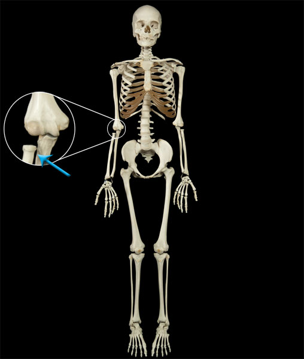

Pivot Joints
A pivot joint is a type of uniaxial joint which only allows movement (rotation) around a single point. A pivot joint is formed when the cylindrical end of a bone is contained within a circle of bone and ligament. The cylindrical bone is then free to rotate around this point. Some examples of pivot joints include the joint between the atlas and axis (Atlantoaxial) which allows side to side movement of the head, and the joint between the radius and ulna (Radioulnar Joint) which allows the supination and pronation of the wrist.
